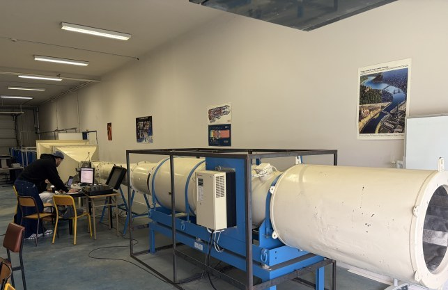
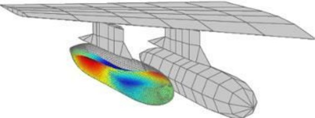
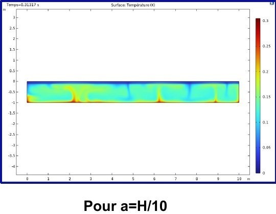

Une sélection de travaux pratiques menés dans le cadre des cours de la filière MECA-FETES, illustrant la diversité des thématiques abordées en mécanique des fluides et transferts.
TP METEX · Équipe L. Pernin, A. Modrin, M. Brochard · encadrant Y. Knapp
Étude expérimentale et théorique de la fragmentation d'un jet d'eau cylindrique vertical (instabilité de Rayleigh-Plateau), régie par la tension superficielle. Caractérisation de l'évolution de la longueur de rupture du jet en fonction de sa vitesse de décharge, imagerie vidéo haute fréquence pour observer la dynamique de rupture, et analyse dimensionnelle pour confronter les mesures aux prédictions du modèle de Rayleigh.
TP METEX · Équipe L. Pernin, A. Modrin, M. Brochard · encadrant Y. Knapp
Détermination expérimentale de la portance, de la traînée et du moment aérodynamique de trois profils NACA (4412, 0015, et 23012 équipé d'un volet hypersustentateur) en soufflerie Eiffel subsonique à veine fermée. Mesures de vitesse d'écoulement au tube de Pitot et efforts mesurés par balance à jauges de contraintes, pour tracer les polaires de chaque profil.

TP Méthodes numériques · Avec L. Pernin
Résolution numérique d'un problème de ballottement de liquide dans un réservoir (enjeu critique en aéronautique et aérospatial pour la stabilité des véhicules et l'alimentation en carburant). Étude de la méthode ALE (Arbitrary Lagrangian Eulerian), qui combine description lagrangienne (solide) et eulérienne (fluide) pour traiter les problèmes d'interaction fluide-structure et de surface libre.

Présentation · Équipe L. Pernin, A. Modrin, M. Brochard
Modélisation et simulation d'un étang solaire dans le cadre du cours d'écoulements géophysiques, avec étude de sensibilité au maillage et étude paramétrique des résultats obtenus.

Classes préparatoires, PC*
Travail d'initiative personnelle encadré autour de la réduction de la pollution sonore urbaine, avec conception d'un système de contrôle actif du bruit — un premier pas vers les problématiques acoustiques retrouvées plus tard dans le projet silencieux en 3A.